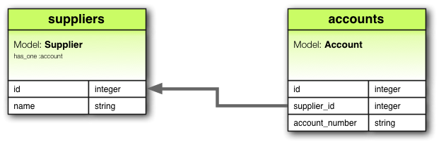
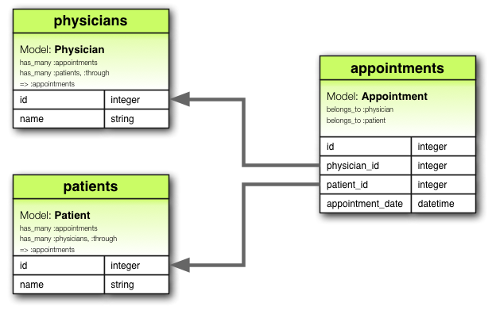
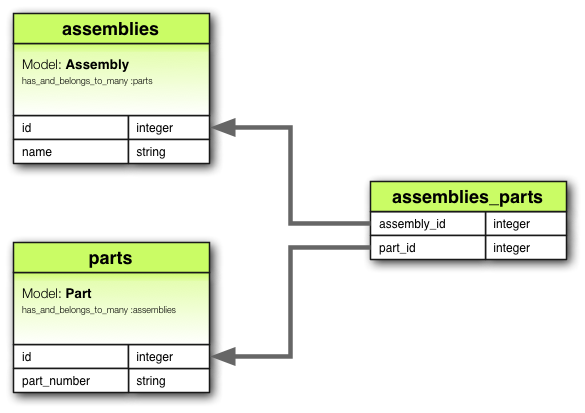
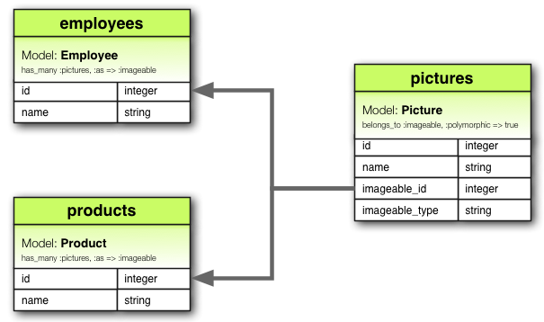

1 Associations Overview
Active Record associations allow you to define relationships between models. Associations are implemented as special macro style calls that make it easy to tell Rails how your models relate to each other, which helps you manage your data more effectively, and makes common operations simpler and easier to read.
A macro-style call is a method that generates or modifies other methods at
runtime, allowing for concise and expressive declarations of functionality, such
as defining model associations in Rails. For example, has_many :comments.
When you set up an association, Rails helps define and manage the Primary Key and Foreign Key relationships between instances of the two models, while the database ensures that your data stays consistent and properly linked.
This makes it easy to keep track of which records are related. It also adds useful methods to your models so you can work with related data more easily.
Consider a simple Rails application with models for authors and books.
1.1 Without Associations
Without associations, creating and deleting books for that author would require a tedious and manual process. Here's what that would look like:
class CreateAuthors < ActiveRecord::Migration[8.0]
def change
create_table :authors do |t|
t.string :name
t.timestamps
end
create_table :books do |t|
t.references :author
t.datetime :published_at
t.timestamps
end
end
end
class Author < ApplicationRecord
end
class Book < ApplicationRecord
end
To add a new book for an existing author, you'd need to provide the author_id
value when creating the book.
@book = Book.create(author_id: @author.id, published_at: Time.now)
To delete an author and ensure all their books are also deleted, you need to
retrieve all the author's books, loop through each book to destroy it, and
then destroy the author.
@books = Book.where(author_id: @author.id)
@books.each do |book|
book.destroy
end
@author.destroy
1.2 Using Associations
However, with associations, we can streamline these operations, as well as others, by explicitly informing Rails about the relationship between the two models. Here's the revised code for setting up authors and books using associations:
class Author < ApplicationRecord
has_many :books, dependent: :destroy
end
class Book < ApplicationRecord
belongs_to :author
end
With this change, creating a new book for a particular author is simpler:
@book = @author.books.create(published_at: Time.now)
Deleting an author and all of its books is much easier:
@author.destroy
When you set up an association in Rails, you still need to create a migration to ensure that the database is properly configured to handle the association. This migration will need to add the necessary foreign key columns to your database tables.
For example, if you set up a belongs_to :author association in the Book
model, you would create a migration to add the author_id column to the books
table:
rails generate migration AddAuthorToBooks author:references
This migration will add the author_id column and set up the foreign key
relationship in the database, ensuring that your models and database stay in
sync.
To learn more about the different types of associations, you can read the next section of this guide. Following that, you'll find some tips and tricks for working with associations. Finally, there's a complete reference to the methods and options for associations in Rails.
2 Types of Associations
Rails supports six types of associations, each with a particular use-case in mind.
Here is a list of all of the supported types with a link to their API docs for more detailed information on how to use them, their method parameters, etc.
In the remainder of this guide, you'll learn how to declare and use the various forms of associations. First, let's take a quick look at the situations where each association type is appropriate.
2.1 belongs_to
A belongs_to association sets up a relationship with another model, such
that each instance of the declaring model "belongs to" one instance of the other
model. For example, if your application includes authors and books, and each
book can be assigned to exactly one author, you'd declare the book model this
way:
class Book < ApplicationRecord
belongs_to :author
end
A belongs_to association must use the singular term. If you use the
plural form, like belongs_to :authors in the Book model, and try to create a
book with Book.create(authors: @author), Rails will give you an "uninitialized
constant Book::Authors" error. This happens because Rails automatically infers
the class name from the association name. If the association name is :authors,
Rails will look for a class named Authors instead of Author.
The corresponding migration might look like this:
class CreateBooks < ActiveRecord::Migration[8.0]
def change
create_table :authors do |t|
t.string :name
t.timestamps
end
create_table :books do |t|
t.belongs_to :author
t.datetime :published_at
t.timestamps
end
end
end
In database terms, the belongs_to association says that this model's table
contains a column which represents a reference to another table. This can be
used to set up one-to-one or one-to-many relations, depending on the setup. If
the table of the other class contains the reference in a one-to-one relation,
then you should use has_one instead.
When used alone, belongs_to produces a one-directional one-to-one
relationship. Therefore each book in the above example "knows" its author, but
the authors don't know about their books. To setup a bi-directional
association - use belongs_to in combination
with a has_one or has_many on the other model, in this case the Author
model.
By default belongs_to validates the presence of the associated record to
guarantee reference consistency.
If optional is set to true in the
model, then belongs_to does not guarantee reference consistency. This means
that the foreign key in one table might not reliably point to a valid primary
key in the referenced table.
class Book < ApplicationRecord
belongs_to :author, optional: true
end
Hence, depending on the use case, you might also need to add a database-level foreign key constraint on the reference column, like this:
create_table :books do |t|
t.belongs_to :author, foreign_key: true
# ...
end
This ensures that even though optional: true allows author_id to be NULL,
when it's not NULL, it must still reference a valid record in the authors table.
2.1.1 Methods Added by belongs_to
When you declare a belongs_to association, the declaring class automatically
gains numerous methods related to the association. Some of these are:
association=(associate)build_association(attributes = {})create_association(attributes = {})create_association!(attributes = {})reload_associationreset_associationassociation_changed?association_previously_changed?
We'll discuss some of the common methods, but you can find an exhaustive list in the ActiveRecord Associations API.
In all of the above methods, association is replaced with the symbol passed as
the first argument to belongs_to. For example, given the declaration:
# app/models/book.rb
class Book < ApplicationRecord
belongs_to :author
end
# app/models/author.rb
class Author < ApplicationRecord
has_many :books
validates :name, presence: true
end
An instance of the Book model will have the following methods:
authorauthor=build_authorcreate_authorcreate_author!reload_authorreset_authorauthor_changed?author_previously_changed?
When initializing a new has_one or belongs_to association you must use
the build_ prefix to build the association, rather than the
association.build method that would be used for has_many or
has_and_belongs_to_many associations. To create one, use the create_ prefix.
2.1.1.1 Retrieving the association
The association method returns the associated object, if any. If no associated
object is found, it returns nil.
@author = @book.author
If the associated object has already been retrieved from the database for this
object, the cached version will be returned. To override this behavior (and
force a database read), call #reload_association on the parent object.
@author = @book.reload_author
To unload the cached version of the associated object—causing the next access,
if any, to query it from the database—call #reset_association on the parent
object.
@book.reset_author
2.1.1.2 Assigning the Association
The association= method assigns an associated object to this object. Behind
the scenes, this means extracting the primary key from the associated object and
setting this object's foreign key to the same value.
@book.author = @author
The build_association method returns a new object of the associated type. This
object will be instantiated from the passed attributes, and the link through
this object's foreign key will be set, but the associated object will not yet
be saved.
@author = @book.build_author(author_number: 123,
author_name: "John Doe")
The create_association method takes it a step further and also saves the
associated object once it passes all of the validations specified on the
associated model.
@author = @book.create_author(author_number: 123,
author_name: "John Doe")
Finally, create_association! does the same, but raises
ActiveRecord::RecordInvalid if the record is invalid.
# This will raise ActiveRecord::RecordInvalid because the name is blank
begin
@book.create_author!(author_number: 123, name: "")
rescue ActiveRecord::RecordInvalid => e
puts e.message
end
irb> raise_validation_error: Validation failed: Name can't be blank (ActiveRecord::RecordInvalid)
2.1.1.3 Checking for Association Changes
The association_changed? method returns true if a new associated object has
been assigned and the foreign key will be updated in the next save.
The association_previously_changed? method returns true if the previous save
updated the association to reference a new associate object.
@book.author # => #<Author author_number: 123, author_name: "John Doe">
@book.author_changed? # => false
@book.author_previously_changed? # => false
@book.author = Author.second # => #<Author author_number: 456, author_name: "Jane Smith">
@book.author_changed? # => true
@book.save!
@book.author_changed? # => false
@book.author_previously_changed? # => true
Do not confuse model.association_changed? with
model.association.changed?. The former checks if the association has been
replaced with a new record, while the latter tracks changes to the attributes of
the association.
2.1.1.4 Checking for Existing Associations
You can see if any associated objects exist by using the association.nil?
method:
if @book.author.nil?
@msg = "No author found for this book"
end
2.1.1.5 Saving Behavior of Associated Objects
Assigning an object to a belongs_to association does not automatically save
either the current object or the associated object. However, when you save the
current object, the association is saved as well.
2.2 has_one
A has_one association indicates that one other model has a reference to
this model. That model can be fetched through this association.
For example, if each supplier in your application has only one account, you'd declare the supplier model like this:
class Supplier < ApplicationRecord
has_one :account
end
The main difference from belongs_to is that the link column (in this case
supplier_id) is located in the other table, not the table where the has_one
is declared.

The corresponding migration might look like this:
class CreateSuppliers < ActiveRecord::Migration[8.0]
def change
create_table :suppliers do |t|
t.string :name
t.timestamps
end
create_table :accounts do |t|
t.belongs_to :supplier
t.string :account_number
t.timestamps
end
end
end
The has_one association creates a one-to-one match with another model. In
database terms, this association says that the other class contains the foreign
key. If this class contains the foreign key, then you should use belongs_to
instead.
Depending on the use case, you might also need to create a unique index and/or a
foreign key constraint on the supplier column for the accounts table. The unique
index ensures that each supplier is associated with only one account and allows
you to query in an efficient manner, while the foreign key constraint ensures
that the supplier_id in the accounts table refers to a valid supplier in
the suppliers table. This enforces the association at the database level.
create_table :accounts do |t|
t.belongs_to :supplier, index: { unique: true }, foreign_key: true
# ...
end
This relation can be bi-directional when used in
combination with belongs_to on the other model.
2.2.1 Methods Added by has_one
When you declare a has_one association, the declaring class automatically
gains numerous methods related to the association. Some of these are:
associationassociation=(associate)build_association(attributes = {})create_association(attributes = {})create_association!(attributes = {})reload_associationreset_association
We'll discuss some of the common methods, but you can find an exhaustive list in the ActiveRecord Associations API.
Like with the belongs_to references, in all of
these methods, association is replaced with the symbol passed as the first
argument to has_one. For example, given the declaration:
# app/models/supplier.rb
class Supplier < ApplicationRecord
has_one :account
end
# app/models/account.rb
class Account < ApplicationRecord
validates :terms, presence: true
belongs_to :supplier
end
Each instance of the Supplier model will have these methods:
accountaccount=build_accountcreate_accountcreate_account!reload_accountreset_account
When initializing a new has_one or belongs_to association you must use
the build_ prefix to build the association, rather than the
association.build method that would be used for has_many or
has_and_belongs_to_many associations. To create one, use the create_ prefix.
2.2.1.1 Retrieving the association
The association method returns the associated object, if any. If no associated
object is found, it returns nil.
@account = @supplier.account
If the associated object has already been retrieved from the database for this
object, the cached version will be returned. To override this behavior (and
force a database read), call #reload_association on the parent object.
@account = @supplier.reload_account
To unload the cached version of the associated object—forcing the next access,
if any, to query it from the database—call #reset_association on the parent
object.
@supplier.reset_account
2.2.1.2 Assigning the Association
The association= method assigns an associated object to this object. Behind
the scenes, this means extracting the primary key from this object and setting
the associated object's foreign key to the same value.
@supplier.account = @account
The build_association method returns a new object of the associated type. This
object will be instantiated from the passed attributes, and the link through
this objects foreign key will be set, but the associated object will not yet
be saved.
@account = @supplier.build_account(terms: "Net 30")
The create_association method takes it a step further and also saves the
associated object once it passes all of the validations specified on the
associated model.
@account = @supplier.create_account(terms: "Net 30")
Finally, create_association! does the same, but raises
ActiveRecord::RecordInvalid if the record is invalid.
create_association! does the same as create_association above, but raises
ActiveRecord::RecordInvalid if the record is invalid.
# This will raise ActiveRecord::RecordInvalid because the terms is blank
begin
@supplier.create_account!(terms: "")
rescue ActiveRecord::RecordInvalid => e
puts e.message
end
irb> raise_validation_error: Validation failed: Terms can't be blank (ActiveRecord::RecordInvalid)
2.2.1.3 Checking for Existing Associations
You can see if any associated objects exist by using the association.nil?
method:
if @supplier.account.nil?
@msg = "No account found for this supplier"
end
2.2.1.4 Saving Behavior of Associated Objects
When you assign an object to a has_one association, that object is
automatically saved to update its foreign key. Additionally, any object being
replaced is also automatically saved, as its foreign key will change too.
If either of these saves fails due to validation errors, the assignment
statement returns false, and the assignment itself is canceled.
If the parent object (the one declaring the has_one association) is unsaved
(that is, new_record? returns true) then the child objects are not saved
immediately. They will be automatically saved when the parent object is saved.
If you want to assign an object to a has_one association without saving the
object, use the build_association method. This method creates a new, unsaved
instance of the associated object, allowing you to work with it before deciding
to save it.
Use autosave: false when you want to control the saving behavior of the
associated objects for the model. This setting prevents the associated object
from being saved automatically when the parent object is saved. In contrast, use
build_association when you need to work with an unsaved associated object and
delay its persistence until you're ready.
2.3 has_many
A has_many association is similar to has_one, but indicates a
one-to-many relationship with another model. You'll often find this association
on the "other side" of a belongs_to association. This association indicates
that each instance of the model has zero or more instances of another model. For
example, in an application containing authors and books, the author model could
be declared like this:
class Author < ApplicationRecord
has_many :books
end
has_many establishes a one-to-many relationship between models, allowing each
instance of the declaring model (Author) to have multiple instances of the
associated model (Book).
Unlike a has_one and belongs_to association, the name of the other
model is pluralized when declaring a has_many association.

The corresponding migration might look like this:
class CreateAuthors < ActiveRecord::Migration[8.0]
def change
create_table :authors do |t|
t.string :name
t.timestamps
end
create_table :books do |t|
t.belongs_to :author
t.datetime :published_at
t.timestamps
end
end
end
The has_many association creates a one-to-many relationship with another
model. In database terms, this association says that the other class will have a
foreign key that refers to instances of this class.
In this migration, the authors table is created with a name column to store
the names of authors. The books table is also created, and it includes a
belongs_to :author association. This association establishes a foreign key
relationship between the books and authors tables. Specifically, the
author_id column in the books table acts as a foreign key, referencing the
id column in the authors table. By including this belongs_to :author
association in the books table, we ensure that each book is associated with a
single author, enabling a has_many association from the Author model. This
setup allows each author to have multiple associated books.
Depending on the use case, it's usually a good idea to create a non-unique index
and optionally a foreign key constraint on the author column for the books
table. Adding an index on the author_id column improves query performance when
retrieving books associated with a specific author.
If you wish to enforce referential
integrity at the database
level, add the foreign_key: true
option to the reference column declarations above. This will ensure that the
author_id in the books table must correspond to a valid id in the authors
table,
create_table :books do |t|
t.belongs_to :author, index: true, foreign_key: true
# ...
end
This relation can be bi-directional when used in
combination with belongs_to on the other model.
2.3.1 Methods Added by has_many
When you declare a has_many association, the declaring class gains numerous
methods related to the association. Some of these are:
collectioncollection<<(object, ...)collection.delete(object, ...)collection.destroy(object, ...)collection=(objects)collection_singular_idscollection_singular_ids=(ids)collection.clearcollection.empty?collection.sizecollection.find(...)collection.where(...)collection.exists?(...)collection.build(attributes = {})collection.create(attributes = {})collection.create!(attributes = {})collection.reload
We'll discuss some of the common methods, but you can find an exhaustive list in the ActiveRecord Associations API.
In all of these methods, collection is replaced with the symbol passed as the
first argument to has_many, and collection_singular is replaced with the
singularized version of that symbol. For example, given the declaration:
class Author < ApplicationRecord
has_many :books
end
An instance of the Author model can have the following methods:
books
books<<(object, ...)
books.delete(object, ...)
books.destroy(object, ...)
books=(objects)
book_ids
book_ids=(ids)
books.clear
books.empty?
books.size
books.find(...)
books.where(...)
books.exists?(...)
books.build(attributes = {}, ...)
books.create(attributes = {})
books.create!(attributes = {})
books.reload
2.3.1.1 Managing the Collection
The collection method returns a Relation of all of the associated objects. If
there are no associated objects, it returns an empty Relation.
@books = @author.books
The collection.delete method removes one or more objects from the
collection by setting their foreign keys to NULL.
@author.books.delete(@book1)
Additionally, objects will be destroyed if they're associated with
dependent: :destroy, and deleted if they're associated with dependent:
:delete_all.
The collection.destroy method removes one or more objects from the
collection by running destroy on each object.
@author.books.destroy(@book1)
Objects will always be removed from the database, ignoring the
:dependent option.
The collection.clear method removes all objects from the collection
according to the strategy specified by the dependent option. If no option is
given, it follows the default strategy. The default strategy for has_many
:through associations is delete_all, and for has_many associations is to
set the foreign keys to NULL.
@author.books.clear
Objects will be deleted if they're associated with dependent:
:destroy or dependent: :destroy_async, just like dependent: :delete_all.
The collection.reload method returns a Relation of all of the associated
objects, forcing a database read. If there are no associated objects, it returns
an empty Relation.
@books = @author.books.reload
2.3.1.2 Assigning the Collection
The collection=(objects) method makes the collection contain only the supplied
objects, by adding and deleting as appropriate. The changes are persisted to the
database.
The collection_singular_ids=(ids) method makes the collection contain only the
objects identified by the supplied primary key values, by adding and deleting as
appropriate. The changes are persisted to the database.
2.3.1.3 Querying the Collection
The collection_singular_ids method returns an array of the ids of the objects
in the collection.
@book_ids = @author.book_ids
The collection.empty? method returns true if the collection does not
contain any associated objects.
<% if @author.books.empty? %>
No Books Found
<% end %>
The collection.size method returns the number of objects in the
collection.
@book_count = @author.books.size
The collection.find method finds objects within the collection's table.
@available_book = @author.books.find(1)
The collection.where method finds objects within the collection based on
the conditions supplied but the objects are loaded lazily meaning that the
database is queried only when the object(s) are accessed.
@available_books = @author.books.where(available: true) # No query yet
@available_book = @available_books.first # Now the database will be queried
The collection.exists? method checks whether an object meeting the
supplied conditions exists in the collection's table.
2.3.1.4 Building and Creating Associated Objects
The collection.build method returns a single or array of new objects of
the associated type. The object(s) will be instantiated from the passed
attributes, and the link through their foreign key will be created, but the
associated objects will not yet be saved.
@book = @author.books.build(published_at: Time.now,
book_number: "A12345")
@books = @author.books.build([
{ published_at: Time.now, book_number: "A12346" },
{ published_at: Time.now, book_number: "A12347" }
])
The collection.create method returns a single or array of new objects of
the associated type. The object(s) will be instantiated from the passed
attributes, the link through its foreign key will be created, and, once it
passes all of the validations specified on the associated model, the associated
object will be saved.
@book = @author.books.create(published_at: Time.now,
book_number: "A12345")
@books = @author.books.create([
{ published_at: Time.now, book_number: "A12346" },
{ published_at: Time.now, book_number: "A12347" }
])
collection.create! does the same as collection.create, but raises
ActiveRecord::RecordInvalid if the record is invalid.
2.3.1.5 When are Objects Saved?
When you assign an object to a has_many association, that object is
automatically saved (in order to update its foreign key). If you assign multiple
objects in one statement, then they are all saved.
If any of these saves fails due to validation errors, then the assignment
statement returns false and the assignment itself is cancelled.
If the parent object (the one declaring the has_many association) is unsaved
(that is, new_record? returns true) then the child objects are not saved
when they are added. All unsaved members of the association will automatically
be saved when the parent is saved.
If you want to assign an object to a has_many association without saving the
object, use the collection.build method.
2.4 has_many :through
A has_many :through association is often used to set up a
many-to-many relationship with another model. This association indicates that
the declaring model can be matched with zero or more instances of another model
by proceeding through a third model.
For example, consider a medical practice where patients make appointments to see physicians. The relevant association declarations could look like this:
class Physician < ApplicationRecord
has_many :appointments
has_many :patients, through: :appointments
end
class Appointment < ApplicationRecord
belongs_to :physician
belongs_to :patient
end
class Patient < ApplicationRecord
has_many :appointments
has_many :physicians, through: :appointments
end
has_many :through establishes a many-to-many relationship between models,
allowing instances of one model (Physician) to be associated with multiple
instances of another model (Patient) through a third "join" model (Appointment).

The corresponding migration might look like this:
class CreateAppointments < ActiveRecord::Migration[8.0]
def change
create_table :physicians do |t|
t.string :name
t.timestamps
end
create_table :patients do |t|
t.string :name
t.timestamps
end
create_table :appointments do |t|
t.belongs_to :physician
t.belongs_to :patient
t.datetime :appointment_date
t.timestamps
end
end
end
In this migration the physicians and patients tables are created with a
name column. The appointments table, which acts as the join table, is
created with physician_id and patient_id columns, establishing the
many-to-many relationship between physicians and patients.
You could also consider using a composite primary
key for the join table in the
has_many :through relationship like below:
class CreateAppointments < ActiveRecord::Migration[8.0]
def change
# ...
create_table :appointments, primary_key: [:physician_id, :patient_id] do |t|
t.belongs_to :physician
t.belongs_to :patient
t.datetime :appointment_date
t.timestamps
end
end
end
The collection of join models in a has_many :through association can be
managed using standard has_many association
methods. For example, if you assign a list of
patients to a physician like this:
physician.patients = patients
Rails will automatically create new join models for any patients in the new list that were not previously associated with the physician. Additionally, if any patients that were previously associated with the physician are not included in the new list, their join records will be automatically deleted. This simplifies managing many-to-many relationships by handling the creation and deletion of the join models for you.
Automatic deletion of join models is direct, no destroy callbacks are triggered. You can read more about callbacks in the Active Record Callbacks Guide.
The has_many :through association is also useful for setting up "shortcuts"
through nested has_many associations. This is particularly beneficial when you
need to access a collection of related records through an intermediary
association.
For example, if a document has many sections, and each section has many paragraphs, you may sometimes want to get a simple collection of all paragraphs in the document without having to manually traverse through each section.
You can set this up with a has_many :through association as follows:
class Document < ApplicationRecord
has_many :sections
has_many :paragraphs, through: :sections
end
class Section < ApplicationRecord
belongs_to :document
has_many :paragraphs
end
class Paragraph < ApplicationRecord
belongs_to :section
end
With through: :sections specified, Rails will now understand:
@document.paragraphs
Whereas, if you had not set up a has_many :through association, you would have
needed to do something like this to get paragraphs in a document:
paragraphs = []
@document.sections.each do |section|
paragraphs.concat(section.paragraphs)
end
2.5 has_one :through
A has_one :through association sets up a one-to-one relationship
with another model through an intermediary model. This association indicates
that the declaring model can be matched with one instance of another model by
proceeding through a third model.
For example, if each supplier has one account, and each account is associated with one account history, then the supplier model could look like this:
class Supplier < ApplicationRecord
has_one :account
has_one :account_history, through: :account
end
class Account < ApplicationRecord
belongs_to :supplier
has_one :account_history
end
class AccountHistory < ApplicationRecord
belongs_to :account
end
This setup allows a supplier to directly access its account_history through
its account.

The corresponding migration to set up these associations might look like this:
class CreateAccountHistories < ActiveRecord::Migration[8.0]
def change
create_table :suppliers do |t|
t.string :name
t.timestamps
end
create_table :accounts do |t|
t.belongs_to :supplier
t.string :account_number
t.timestamps
end
create_table :account_histories do |t|
t.belongs_to :account
t.integer :credit_rating
t.timestamps
end
end
end
2.6 has_and_belongs_to_many
A has_and_belongs_to_many association creates a direct many-to-many
relationship with another model, with no intervening model. This association
indicates that each instance of the declaring model refers to zero or more
instances of another model.
For example, consider an application with Assembly and Part models, where
each assembly can contain many parts, and each part can be used in many
assemblies. You can set up the models as follows:
class Assembly < ApplicationRecord
has_and_belongs_to_many :parts
end
class Part < ApplicationRecord
has_and_belongs_to_many :assemblies
end

Even though a has_and_belongs_to_many does not require an intervening model,
it does require a separate table to establish the many-to-many relationship
between the two models involved. This intervening table serves to store the
related data, mapping the associations between instances of the two models. The
table does not necessarily need a primary key since its purpose is solely to
manage the relationship between the associated records. The corresponding
migration might look like this:
class CreateAssembliesAndParts < ActiveRecord::Migration[8.0]
def change
create_table :assemblies do |t|
t.string :name
t.timestamps
end
create_table :parts do |t|
t.string :part_number
t.timestamps
end
# Create a join table to establish the many-to-many relationship between assemblies and parts.
# `id: false` indicates that the table does not need a primary key of its own
create_table :assemblies_parts, id: false do |t|
# creates foreign keys linking the join table to the `assemblies` and `parts` tables
t.belongs_to :assembly
t.belongs_to :part
end
end
end
The has_and_belongs_to_many association creates a many-to-many relationship
with another model. In database terms, this associates two classes via an
intermediate join table that includes foreign keys referring to each of the
classes.
If the join table for a has_and_belongs_to_many association has additional
columns beyond the two foreign keys, these columns will be added as attributes
to records retrieved via that association. Records returned with additional
attributes will always be read-only, because Rails cannot save changes to those
attributes.
The use of extra attributes on the join table in a
has_and_belongs_to_many association is deprecated. If you require this sort of
complex behavior on the table that joins two models in a many-to-many
relationship, you should use a has_many :through association instead of
has_and_belongs_to_many.
2.6.1 Methods Added by has_and_belongs_to_many
When you declare a has_and_belongs_to_many association, the declaring class
gains numerous methods related to the association. Some of these are:
collectioncollection<<(object, ...)collection.delete(object, ...)collection.destroy(object, ...)collection=(objects)collection_singular_idscollection_singular_ids=(ids)collection.clearcollection.empty?collection.sizecollection.find(...)collection.where(...)collection.exists?(...)collection.build(attributes = {})collection.create(attributes = {})collection.create!(attributes = {})collection.reload
We'll discuss some of the common methods, but you can find an exhaustive list in the ActiveRecord Associations API.
In all of these methods, collection is replaced with the symbol passed as the
first argument to has_and_belongs_to_many, and collection_singular is
replaced with the singularized version of that symbol. For example, given the
declaration:
class Part < ApplicationRecord
has_and_belongs_to_many :assemblies
end
An instance of the Part model can have the following methods:
assemblies
assemblies<<(object, ...)
assemblies.delete(object, ...)
assemblies.destroy(object, ...)
assemblies=(objects)
assembly_ids
assembly_ids=(ids)
assemblies.clear
assemblies.empty?
assemblies.size
assemblies.find(...)
assemblies.where(...)
assemblies.exists?(...)
assemblies.build(attributes = {}, ...)
assemblies.create(attributes = {})
assemblies.create!(attributes = {})
assemblies.reload
2.6.1.1 Managing the Collection
The collection method returns a Relation of all of the associated objects. If
there are no associated objects, it returns an empty Relation.
@assemblies = @part.assemblies
The collection<< method adds one or more objects to the collection by
creating records in the join table.
@part.assemblies << @assembly1
This method is aliased as collection.concat and collection.push.
The collection.delete method removes one or more objects from the
collection by deleting records in the join table. This does not destroy the
objects.
@part.assemblies.delete(@assembly1)
The collection.destroy method removes one or more objects from the
collection by deleting records in the join table. This does not destroy the
objects.
@part.assemblies.destroy(@assembly1)
The collection.clear method removes every object from the collection by
deleting the rows from the joining table. This does not destroy the associated
objects.
2.6.1.2 Assigning the Collection
The collection= method makes the collection contain only the supplied objects,
by adding and deleting as appropriate. The changes are persisted to the
database.
The collection_singular_ids= method makes the collection contain only the
objects identified by the supplied primary key values, by adding and deleting as
appropriate. The changes are persisted to the database.
2.6.1.3 Querying the Collection
The collection_singular_ids method returns an array of the ids of the objects
in the collection.
@assembly_ids = @part.assembly_ids
The collection.empty? method returns true if the collection does not
contain any associated objects.
<% if @part.assemblies.empty? %>
This part is not used in any assemblies
<% end %>
The collection.size method returns the number of objects in the
collection.
@assembly_count = @part.assemblies.size
The collection.find method finds objects within the collection's table.
@assembly = @part.assemblies.find(1)
The collection.where method finds objects within the collection based on
the conditions supplied but the objects are loaded lazily meaning that the
database is queried only when the object(s) are accessed.
@new_assemblies = @part.assemblies.where("created_at > ?", 2.days.ago)
The collection.exists? method checks whether an object meeting the
supplied conditions exists in the collection's table.
2.6.1.4 Building and Creating Associated Objects
The collection.build method returns a new object of the associated type.
This object will be instantiated from the passed attributes, and the link
through the join table will be created, but the associated object will not yet
be saved.
@assembly = @part.assemblies.build({ assembly_name: "Transmission housing" })
The collection.create method returns a new object of the associated type.
This object will be instantiated from the passed attributes, the link through
the join table will be created, and, once it passes all of the validations
specified on the associated model, the associated object will be saved.
@assembly = @part.assemblies.create({ assembly_name: "Transmission housing" })
Does the same as collection.create, but raises ActiveRecord::RecordInvalid
if the record is invalid.
The collection.reload method returns a Relation of all of the associated
objects, forcing a database read. If there are no associated objects, it returns
an empty Relation.
@assemblies = @part.assemblies.reload
2.6.1.5 When are Objects Saved?
When you assign an object to a has_and_belongs_to_many association, that
object is automatically saved (in order to update the join table). If you assign
multiple objects in one statement, then they are all saved.
If any of these saves fails due to validation errors, then the assignment
statement returns false and the assignment itself is cancelled.
If the parent object (the one declaring the has_and_belongs_to_many
association) is unsaved (that is, new_record? returns true) then the child
objects are not saved when they are added. All unsaved members of the
association will automatically be saved when the parent is saved.
If you want to assign an object to a has_and_belongs_to_many association
without saving the object, use the collection.build method.
3 Choosing an Association
3.1 belongs_to vs has_one
If you want to set up a one-to-one relationship between two models, you can
choose between a belongs_to and a has_one association. How do you know which
one to choose?
The distinction lies in the placement of the foreign key, which goes on the
table of the class declaring the belongs_to association. However, it’s
essential to understand the semantics to determine the correct associations:
belongs_to: This association indicates that the current model contains the foreign key and is a child in the relationship. It references another model, implying that each instance of this model is linked to one instance of the other model.has_one: This association indicates that the current model is the parent in the relationship, and it owns one instance of the other model.
For example, consider a scenario with suppliers and their accounts. It makes more sense to say that a supplier has/owns an account (where the supplier is the parent) rather than an account has/owns a supplier. Therefore, the correct associations would be:
- A supplier has one account.
- An account belongs to one supplier.
Here is how you can define these associations in Rails:
class Supplier < ApplicationRecord
has_one :account
end
class Account < ApplicationRecord
belongs_to :supplier
end
To implement these associations, you'll need to create the corresponding database tables and set up the foreign key. Here's an example migration:
class CreateSuppliers < ActiveRecord::Migration[8.0]
def change
create_table :suppliers do |t|
t.string :name
t.timestamps
end
create_table :accounts do |t|
t.belongs_to :supplier_id
t.string :account_number
t.timestamps
end
add_index :accounts, :supplier_id
end
end
Remember that the foreign key goes on the table of the class declaring the
belongs_to association. In this case the account table.
3.2 has_many :through vs has_and_belongs_to_many
Rails offers two different ways to declare a many-to-many relationship between
models: has_many :through and has_and_belongs_to_many. Understanding the
differences and use cases for each can help you choose the best approach for
your application's needs.
The has_many :through association sets up a many-to-many relationship through
an intermediary model (also known as a join model). This approach is more
flexible and allows you to add validations, callbacks, and extra attributes to
the join model. The join table needs a primary_key (or a composite primary
key).
class Assembly < ApplicationRecord
has_many :manifests
has_many :parts, through: :manifests
end
class Manifest < ApplicationRecord
belongs_to :assembly
belongs_to :part
end
class Part < ApplicationRecord
has_many :manifests
has_many :assemblies, through: :manifests
end
You'd use has_many :through when:
- You need to add extra attributes or methods to the join table.
- You require validations or callbacks on the join model.
- The join table should be treated as an independent entity with its own behavior.
The has_and_belongs_to_many association allows you to create a many-to-many
relationship directly between two models without needing an intermediary model.
This method is straightforward and is suitable for simple associations where no
additional attributes or behaviors are required on the join table. For
has_and_belongs_to_many associations, you'll need to create a join table
without a primary key.
class Assembly < ApplicationRecord
has_and_belongs_to_many :parts
end
class Part < ApplicationRecord
has_and_belongs_to_many :assemblies
end
You'd use has_and_belongs_to_many when:
- The association is simple and does not require additional attributes or behaviors on the join table.
- You do not need validations, callbacks, or extra methods on the join table.
4 Advanced Associations
4.1 Polymorphic Associations
A slightly more advanced twist on associations is the polymorphic association. Polymorphic associations in Rails allow a model to belong to multiple other models through a single association. This can be particularly useful when you have a model that needs to be linked to different types of models.
For instance, imagine you have a Picture model that can belong to either
an Employee or a Product, because each of these can have a profile picture.
Here's how this could be declared:
class Picture < ApplicationRecord
belongs_to :imageable, polymorphic: true
end
class Employee < ApplicationRecord
has_many :pictures, as: :imageable
end
class Product < ApplicationRecord
has_many :pictures, as: :imageable
end

In the context above, imageable is a name chosen for the association. It's a
symbolic name that represents the polymorphic association between the Picture
model and other models such as Employee and Product. The important thing is
to use the same name (imageable) consistently across all associated models to
establish the polymorphic association correctly.
When you declare belongs_to :imageable, polymorphic: true in the Picture
model, you're saying that a Picture can belong to any model (like Employee
or Product) through this association.
You can think of a polymorphic belongs_to declaration as setting up an
interface that any other model can use. This allows you to retrieve a collection
of pictures from an instance of the Employee model using @employee.pictures.
Similarly, you can retrieve a collection of pictures from an instance of the
Product model using @product.pictures.
Additionally, if you have an instance of the Picture model, you can get its
parent via @picture.imageable, which could be an Employee or a Product.
To setup a polymorphic association manually you would need to declare both a
foreign key column (imageable_id) and a type column (imageable_type) in the
model:
class CreatePictures < ActiveRecord::Migration[8.0]
def change
create_table :pictures do |t|
t.string :name
t.bigint :imageable_id
t.string :imageable_type
t.timestamps
end
add_index :pictures, [:imageable_type, :imageable_id]
end
end
In our example, imageable_id could be the ID of either an Employee or a
Product, and imageable_type is the name of the associated model's class, so
either Employee or Product.
While creating the polymorphic association manually is acceptable, it is instead
recommended to use t.references or its alias t.belong_to and specify
polymorphic: true so that Rails knows that the association is polymorphic, and
it automatically adds both the foreign key and type columns to the table.
class CreatePictures < ActiveRecord::Migration[8.0]
def change
create_table :pictures do |t|
t.string :name
t.belongs_to :imageable, polymorphic: true
t.timestamps
end
end
end
Since polymorphic associations rely on storing class names in the database, that data must remain synchronized with the class name used by the Ruby code. When renaming a class, make sure to update the data in the polymorphic type column.
For example, if you change the class name from Product to Item then you'd
need to run a migration script to update the imageable_type column in the
pictures table (or whichever table is affected) with the new class name.
Additionally, you'll need to update any other references to the class name
throughout your application code to reflect the change.
4.2 Models with Composite Primary Keys
Rails can often infer primary key-foreign key relationships between associated models, but when dealing with composite primary keys, Rails typically defaults to using only part of the composite key, often the id column, unless explicitly instructed otherwise.
If you're working with composite primary keys in your Rails models and need to ensure the correct handling of associations, please refer to the Associations section of the Composite Primary Keys guide. This section provides comprehensive guidance on setting up and using associations with composite primary keys in Rails, including how to specify composite foreign keys when necessary.
4.3 Self Joins
A self-join is a regular join, but the table is joined with itself. This is useful in situations where there is a hierarchical relationship within a single table. A common example is an employee management system where an employee can have a manager, and that manager is also an employee.
Consider an organization where employees can be managers of other employees. We
want to track this relationship using a single employees table.
In your Rails model, you define the Employee class to reflect these
relationships:
class Employee < ApplicationRecord
# an employee can have many subordinates.
has_many :subordinates, class_name: "Employee", foreign_key: "manager_id"
# an employee can have one manager.
belongs_to :manager, class_name: "Employee", optional: true
end
has_many :subordinates sets up a one-to-many relationship where an employee
can have many subordinates. Here, we specify that the related model is also
Employee (class_name: "Employee") and the foreign key used to identify the
manager is manager_id.
belongs_to :manager sets up a one-to-one relationship where an employee can
belong to one manager. Again, we specify the related model as Employee.
To support this relationship, we need to add a manager_id column to the
employees table. This column references the id of another employee (the
manager).
class CreateEmployees < ActiveRecord::Migration[8.0]
def change
create_table :employees do |t|
# Add a belongs_to reference to the manager, which is an employee.
t.belongs_to :manager, foreign_key: { to_table: :employees }
t.timestamps
end
end
end
t.belongs_to :manageradds amanager_idcolumn to theemployeestable.foreign_key: { to_table: :employees }ensures that themanager_idcolumn references theidcolumn of theemployeestable.
The to_table option passed to foreign_key and more are explained in
SchemaStatements#add_reference.
With this setup, you can easily access an employee's subordinates and manager in your Rails application.
To get an employee's subordinates:
employee = Employee.find(1)
subordinates = employee.subordinates
To get an employee's manager:
manager = employee.manager
5 Single Table Inheritance (STI)
Single Table Inheritance (STI) is a pattern in Rails that allows multiple models to be stored in a single database table. This is useful when you have different types of entities that share common attributes and behavior but also have specific behaviors.
For example, suppose we have Car, Motorcycle, and Bicycle models. These
models will share fields like color and price, but each will have unique
behaviors. They will also each have their own controller.
5.1 Generating the Base Vehicle Model
First, we generate the base Vehicle model with shared fields:
$ bin/rails generate model vehicle type:string color:string price:decimal{10.2}
Here, the type field is crucial for STI as it stores the model name (Car,
Motorcycle, or Bicycle). STI requires this field to differentiate between
the different models stored in the same table.
5.2 Generating Child Models
Next, we generate the Car, Motorcycle, and Bicycle models that inherit
from Vehicle. These models won't have their own tables; instead, they will use
the vehicles table.
To generate theCar model:
$ bin/rails generate model car --parent=Vehicle
For this, we can use the --parent=PARENT option, which will generate a model
that inherits from the specified parent and without equivalent migration (since
the table already exists).
This generates a Car model that inherits from Vehicle:
class Car < Vehicle
end
This means that all behavior added to Vehicle is available for Car too, as
associations, public methods, etc. Creating a car will save it in the vehicles
table with "Car" as the type field:
Repeat the same process for Motorcycle and Bicycle.
5.3 Creating Records
Creating a record for Car:
Car.create(color: 'Red', price: 10000)
This will generate the following SQL:
INSERT INTO "vehicles" ("type", "color", "price") VALUES ('Car', 'Red', 10000)
5.4 Querying Records
Querying car records will search only for vehicles that are cars:
Car.all
will run a query like:
SELECT "vehicles".* FROM "vehicles" WHERE "vehicles"."type" IN ('Car')
5.5 Adding Specific Behavior
You can add specific behavior or methods to the child models. For example,
adding a method to the Car model:
class Car < Vehicle
def honk
'Beep Beep'
end
end
Now you can call the honk method on a Car instance:
car = Car.first
car.honk
# => 'Beep Beep'
5.6 Controllers
Each model can have its own controller. For example, the CarsController:
# app/controllers/cars_controller.rb
class CarsController < ApplicationController
def index
@cars = Car.all
end
end
5.7 Overriding the inheritance column
There may be cases (like when working with a legacy database) where you need to override the name of the inheritance column. This can be achieved with the inheritance_column method.
# Schema: vehicles[ id, kind, created_at, updated_at ]
class Vehicle < ApplicationRecord
self.inheritance_column = "kind"
end
class Car < Vehicle
end
Car.create
# => #<Car kind: "Car", color: "Red", price: 10000>
In this setup, Rails will use the kind column to store the model type,
allowing STI to function correctly with the custom column name.
5.8 Disabling the inheritance column
There may be cases (like when working with a legacy database) where you need to
disable Single Table Inheritance altogether. If you don't disable STI properly,
you might encounter an ActiveRecord::SubclassNotFound error.
To disable STI, you can set the inheritance_column to nil.
# Schema: vehicles[ id, type, created_at, updated_at ]
class Vehicle < ApplicationRecord
self.inheritance_column = nil
end
Vehicle.create!(type: "Car")
# => #<Vehicle type: "Car", color: "Red", price: 10000>
In this configuration, Rails will treat the type column as a normal attribute and will not use it for STI purposes. This is useful if you need to work with a legacy schema that does not follow the STI pattern.
These adjustments provide flexibility when integrating Rails with existing databases or when specific customization is required for your models.
5.9 Considerations
Single Table Inheritance (STI) works best
when there is little difference between subclasses and their attributes, but it
includes all attributes of all subclasses in a single table.
A disadvantage of this approach is that it can result in table bloat, as the
table will include attributes specific to each subclass, even if they aren't
used by others. This can be solved by using Delegated
Types.
Additionally, if you’re using polymorphic associations, where a model can belong to more than one other model via a type and an ID, it could become complex to maintain referential integrity because the association logic must handle different types correctly.
Finally, if you have specific data integrity checks or validations that differ between subclasses, you need to ensure these are correctly handled by Rails or the database, especially when setting up foreign key constraints.
6 Delegated Types
Delegated types solves the Single Table Inheritance
(STI) problem of table bloat via
delegated_type. This approach allows us to store shared attributes in a
superclass table and have separate tables for subclass-specific attributes.
6.1 Setting up Delegated Types
To use delegated types, we need to model our data as follows:
- There is a superclass that stores shared attributes among all subclasses in its table.
- Each subclass must inherit from the superclass, and will have a separate table for any additional attributes specific to it.
This eliminates the need to define attributes in a single table that are unintentionally shared among all subclasses.
6.2 Generating Models
In order to apply this to our example above, we need to regenerate our models.
First, let's generate the base Entry model which will act as our superclass:
$ bin/rails generate model entry entryable_type:string entryable_id:integer
Then, we will generate new Message and Comment models for delegation:
$ bin/rails generate model message subject:string body:string
$ bin/rails generate model comment content:string
After running the generators, our models should look like this:
# Schema: entries[ id, entryable_type, entryable_id, created_at, updated_at ]
class Entry < ApplicationRecord
end
# Schema: messages[ id, subject, body, created_at, updated_at ]
class Message < ApplicationRecord
end
# Schema: comments[ id, content, created_at, updated_at ]
class Comment < ApplicationRecord
end
6.3 Declaring delegated_type
First, declare a delegated_type in the superclass Entry.
class Entry < ApplicationRecord
delegated_type :entryable, types: %w[ Message Comment ], dependent: :destroy
end
The entryable parameter specifies the field to use for delegation, and include
the types Message and Comment as the delegate classes. The entryable_type
and entryable_id fields store the subclass name and the record ID of the
delegate subclass, respectively.
6.4 Defining the Entryable Module
Next, define a module to implement those delegated types by declaring the as:
:entryable parameter in the has_one association.
module Entryable
extend ActiveSupport::Concern
included do
has_one :entry, as: :entryable, touch: true
end
end
Include the created module in your subclass:
class Message < ApplicationRecord
include Entryable
end
class Comment < ApplicationRecord
include Entryable
end
With this definition complete, our Entry delegator now provides the following
methods:
| Method | Return |
|---|---|
Entry.entryable_types |
["Message", "Comment"] |
Entry#entryable_class |
Message or Comment |
Entry#entryable_name |
"message" or "comment" |
Entry.messages |
Entry.where(entryable_type: "Message") |
Entry#message? |
Returns true when entryable_type == "Message" |
Entry#message |
Returns the message record, when entryable_type == "Message", otherwise nil |
Entry#message_id |
Returns entryable_id, when entryable_type == "Message", otherwise nil |
Entry.comments |
Entry.where(entryable_type: "Comment") |
Entry#comment? |
Returns true when entryable_type == "Comment" |
Entry#comment |
Returns the comment record, when entryable_type == "Comment", otherwise nil |
Entry#comment_id |
Returns entryable_id, when entryable_type == "Comment", otherwise nil |
6.5 Object creation
When creating a new Entry object, we can specify the entryable subclass at
the same time.
Entry.create! entryable: Message.new(subject: "hello!")
6.6 Adding further delegation
We can enhance our Entry delegator by defining delegate and using
polymorphism on the subclasses. For example, to delegate the title method from
Entry to it's subclasses:
class Entry < ApplicationRecord
delegated_type :entryable, types: %w[ Message Comment ]
delegate :title, to: :entryable
end
class Message < ApplicationRecord
include Entryable
def title
subject
end
end
class Comment < ApplicationRecord
include Entryable
def title
content.truncate(20)
end
end
This setup allows Entry to delegate the title method to its subclasses,
where Message uses subject and Comment uses a truncated version of
content.
7 Tips, Tricks, and Warnings
Here are a few things you should know to make efficient use of Active Record associations in your Rails applications:
- Controlling caching
- Avoiding name collisions
- Updating the schema
- Controlling association scope
- Bi-directional associations
7.1 Controlling Association Caching
All of the association methods are built around caching, which keeps the result of loaded associations for further operations. The cache is even shared across methods. For example:
# retrieves books from the database
author.books.load
# uses the cached copy of books
author.books.size
# uses the cached copy of books
author.books.empty?
When we use author.books, the data is not immediately loaded from the
database. Instead, it sets up a query that will be executed when you actually
try to use the data, for example, by calling methods that require data like
each, size, empty?, etc. By calling author.books.load, before calling other
methods which use the data, you explicitly trigger the query to load the data
from the database immediately. This is useful if you know you will need the data
and want to avoid the potential performance overhead of multiple queries being
triggered as you work with the association.
But what if you want to reload the cache, because data might have been changed
by some other part of the application? Just call
reload
on the association:
# retrieves books from the database
author.books.load
# uses the cached copy of books
author.books.size
# discards the cached copy of books and goes back to the database
author.books.reload.empty?
7.2 Avoiding Name Collisions
When creating associations in Ruby on Rails models, it's important to avoid
using names that are already used for instance methods of ActiveRecord::Base.
This is because creating an association with a name that clashes with an
existing method could lead to unintended consequences, such as overriding the
base method and causing issues with functionality. For example, using names like
attributes or connection for associations would be problematic.
7.3 Updating the Schema
Associations are extremely useful, they are responsible for defining the
relationships between models but they do not update your database schema. You
are responsible for maintaining your database schema to match your associations.
This usually involves two main tasks: creating foreign keys for belongs_to
associations and setting up the correct join table for has_many
:through and
has_and_belongs_to_many associations. You can read
more about when to use a has_many :through vs has_and_belongs_to_many in the
has many through vs has and belongs to many
section.
7.3.1 Creating Foreign Keys for belongs_to Associations
When you declare a belongs_to association, you need to create
foreign keys as appropriate. For example, consider this model:
class Book < ApplicationRecord
belongs_to :author
end
This declaration needs to be backed up by a corresponding foreign key column in the books table. For a brand new table, the migration might look something like this:
class CreateBooks < ActiveRecord::Migration[8.0]
def change
create_table :books do |t|
t.datetime :published_at
t.string :book_number
t.belongs_to :author
end
end
end
Whereas for an existing table, it might look like this:
class AddAuthorToBooks < ActiveRecord::Migration[8.0]
def change
add_reference :books, :author
end
end
7.3.2 Creating Join Tables for has_and_belongs_to_many Associations
If you create a has_and_belongs_to_many association, you need to explicitly
create the join table. Unless the name of the join table is explicitly specified
by using the :join_table option, Active Record creates the name by using the
lexical order of the class names. So a join between author and book models will
give the default join table name of "authors_books" because "a" outranks "b" in
lexical ordering.
Whatever the name, you must manually generate the join table with an appropriate migration. For example, consider these associations:
class Assembly < ApplicationRecord
has_and_belongs_to_many :parts
end
class Part < ApplicationRecord
has_and_belongs_to_many :assemblies
end
These need to be backed up by a migration to create the assemblies_parts
table.
$ bin/rails generate migration CreateAssembliesPartsJoinTable assemblies parts
You can then fill out the migration and ensure that the table is created without a primary key.
class CreateAssembliesPartsJoinTable < ActiveRecord::Migration[8.0]
def change
create_table :assemblies_parts, id: false do |t|
t.bigint :assembly_id
t.bigint :part_id
end
add_index :assemblies_parts, :assembly_id
add_index :assemblies_parts, :part_id
end
end
We pass id: false to create_table because the join table does not represent
a model. If you observe any strange behavior in a has_and_belongs_to_many
association like mangled model IDs, or exceptions about conflicting IDs, chances
are you forgot to set id: false when creating your migration.
For simplicity, you can also use the method create_join_table:
class CreateAssembliesPartsJoinTable < ActiveRecord::Migration[8.0]
def change
create_join_table :assemblies, :parts do |t|
t.index :assembly_id
t.index :part_id
end
end
end
You can read more about the create_join_table method in the Active Record
Migration Guides
7.3.3 Creating Join Tables for has_many :through Associations
The main difference in schema implementation between creating a join table for
has_many :through vs has_and_belongs_to_many is that the join table for a
has_many :through requires an id.
class CreateAppointments < ActiveRecord::Migration[8.0]
def change
create_table :appointments do |t|
t.belongs_to :physician
t.belongs_to :patient
t.datetime :appointment_date
t.timestamps
end
end
end
7.4 Controlling Association Scope
By default, associations look for objects only within the current module's scope. This feature is particularly useful when declaring Active Record models inside a module, as it keeps the associations scoped properly. For example:
module MyApplication
module Business
class Supplier < ApplicationRecord
has_one :account
end
class Account < ApplicationRecord
belongs_to :supplier
end
end
end
In this example, both the Supplier and Account classes are defined within
the same module (MyApplication::Business). This organization allows you to
structure your models into folders based on their scope without needing to
explicitly specify the scope in every association:
# app/models/my_application/business/supplier.rb
module MyApplication
module Business
class Supplier < ApplicationRecord
has_one :account
end
end
end
# app/models/my_application/business/account.rb
module MyApplication
module Business
class Account < ApplicationRecord
belongs_to :supplier
end
end
end
It is important to note that while model scoping helps organize your code, it
does not change the naming convention for your database tables. For instance, if
you have a MyApplication::Business::Supplier model, the corresponding database
table should still follow the naming convention and be named
my_application_business_suppliers.
However, if the Supplier and Account models are defined in different scopes,
the associations will not work by default:
module MyApplication
module Business
class Supplier < ApplicationRecord
has_one :account
end
end
module Billing
class Account < ApplicationRecord
belongs_to :supplier
end
end
end
To associate a model with a model in a different namespace, you must specify the complete class name in your association declaration:
module MyApplication
module Business
class Supplier < ApplicationRecord
has_one :account,
class_name: "MyApplication::Billing::Account"
end
end
module Billing
class Account < ApplicationRecord
belongs_to :supplier,
class_name: "MyApplication::Business::Supplier"
end
end
end
By explicitly declaring the class_name option, you can create associations
across different namespaces, ensuring the correct models are linked regardless
of their module scope.
7.5 Bi-directional Associations
In Rails, it's common for associations between models to be bi-directional, meaning they need to be declared in both related models. Consider the following example:
class Author < ApplicationRecord
has_many :books
end
class Book < ApplicationRecord
belongs_to :author
end
Active Record will attempt to automatically identify that these two models share a bi-directional association based on the association name. This information allows Active Record to:
Prevent needless queries for already-loaded data:
Active Record avoids additional database queries for already-loaded data.
irb> author = Author.first irb> author.books.all? do |book| irb> book.author.equal?(author) # No additional queries executed here irb> end => truePrevent inconsistent data
Since only one copy of the
Authorobject is loaded, it helps to prevent inconsistencies.irb> author = Author.first irb> book = author.books.first irb> author.name == book.author.name => true irb> author.name = "Changed Name" irb> author.name == book.author.name => trueAutomatic saving of associations in more cases:
irb> author = Author.new irb> book = author.books.new irb> book.save! irb> book.persisted? => true irb> author.persisted? => trueValidate the presence and absence of associations in more cases:
irb> book = Book.new irb> book.valid? => false irb> book.errors.full_messages => ["Author must exist"] irb> author = Author.new irb> book = author.books.new irb> book.valid? => true
Sometimes, you might need to customize the association with options like
:foreign_key or :class_name. When you do this, Rails might not automatically
recognize the bi-directional association involving :through or :foreign_key
options.
Custom scopes on the opposite association also prevent automatic identification,
as do custom scopes on the association itself unless
config.active_record.automatic_scope_inversing is set to true.
For example, consider the following model declarations with a custom foreign key:
class Author < ApplicationRecord
has_many :books
end
class Book < ApplicationRecord
belongs_to :writer, class_name: 'Author', foreign_key: 'author_id'
end
Due to the :foreign_key option, Active Record will not automatically recognize
the bi-directional association, which can lead to several issues:
Execute needless queries for the same data (in this example causing N+1 queries):
irb> author = Author.first irb> author.books.any? do |book| irb> book.writer.equal?(author) # This executes an author query for every book irb> end => falseReference multiple copies of a model with inconsistent data:
irb> author = Author.first irb> book = author.books.first irb> author.name == book.writer.name => true irb> author.name = "Changed Name" irb> author.name == book.writer.name => falseFail to autosave associations:
irb> author = Author.new irb> book = author.books.new irb> book.save! irb> book.persisted? => true irb> author.persisted? => falseFail to validate presence or absence:
irb> author = Author.new irb> book = author.books.new irb> book.valid? => false irb> book.errors.full_messages => ["Author must exist"]
To resolve these issues, you can explicitly declare bi-directional associations
using the :inverse_of option:
class Author < ApplicationRecord
has_many :books, inverse_of: 'writer'
end
class Book < ApplicationRecord
belongs_to :writer, class_name: 'Author', foreign_key: 'author_id'
end
By including the :inverse_of option in the has_many association declaration,
Active Record will recognize the bi-directional association and behave as
described in the initial examples above.
8 Association References
8.1 Options
While Rails uses intelligent defaults that will work well in most situations, there may be times when you want to customize the behavior of the association references. Such customizations can be accomplished by passing options blocks when you create the association. For example, this association uses two such options:
class Book < ApplicationRecord
belongs_to :author, touch: :books_updated_at,
counter_cache: true
end
Each association supports numerous options which you can read more about in
Options section of each association in the ActiveRecord Associations
API.
We'll discuss some of the common use cases below.
8.1.1 :class_name
If the name of the other model cannot be derived from the association name, you
can use the :class_name option to supply the model name. For example, if a
book belongs to an author, but the actual name of the model containing authors
is Patron, you'd set things up this way:
class Book < ApplicationRecord
belongs_to :author, class_name: "Patron"
end
8.1.2 :dependent
Controls what happens to the associated object when its owner is destroyed:
:destroy, when the object is destroyed,destroywill be called on its associated objects. This method not only removes the associated records from the database but also ensures that any defined callbacks (likebefore_destroyandafter_destroy) are executed. This is useful for performing custom logic during the deletion process, such as logging or cleaning up related data.:delete, when the object is destroyed, all its associated objects will be deleted directly from the database without calling theirdestroymethod. This method performs a direct deletion and bypasses any callbacks or validations in the associated models, making it more efficient but potentially leading to data integrity issues if important cleanup tasks are skipped. Usedeletewhen you need to remove records quickly and are confident that no additional actions are required for the associated records.:destroy_async: when the object is destroyed, anActiveRecord::DestroyAssociationAsyncJobjob is enqueued which will call destroy on its associated objects. Active Job must be set up for this to work. Do not use this option if the association is backed by foreign key constraints in your database. The foreign key constraint actions will occur inside the same transaction that deletes its owner.:nullifycauses the foreign key to be set toNULL. Polymorphic type column is also nullified on polymorphic associations. Callbacks are not executed.:restrict_with_exceptioncauses anActiveRecord::DeleteRestrictionErrorexception to be raised if there is an associated record:restrict_with_errorcauses an error to be added to the owner if there is an associated object
You should not specify this option on a belongs_to association that
is connected with a has_many association on the other class. Doing so can lead
to orphaned records in your database because destroying the parent object may
attempt to destroy its children, which in turn may attempt to destroy the parent
again, causing inconsistencies.
Do not leave the :nullify option for associations with NOT NULL database
constraints. Setting dependent to :destroy is essential; otherwise, the
foreign key of the associated object may be set to NULL, preventing changes to
it.
The :dependent option is ignored with the :through option. When using
:through, the join model must have a belongs_to association, and the
deletion affects only the join records, not the associated records.
When using dependent: :destroy on a scoped association, only the scoped
objects are destroyed. For example, in a Post model defined as has_many
:comments, -> { where published: true }, dependent: :destroy, calling destroy
on a post will only delete published comments, leaving unpublished comments
intact with a foreign key pointing to the deleted post.
You cannot use the :dependent option directly on a has_and_belongs_to_many
association. To manage deletions of join table records, handle them manually or
switch to a has_many :through association, which provides more flexibility and
supports the :dependent option.
8.1.3 :foreign_key
By convention, Rails assumes that the column used to hold the foreign key on
this model is the name of the association with the suffix _id added. The
:foreign_key option lets you set the name of the foreign key directly:
class Supplier < ApplicationRecord
has_one :account, foreign_key: "supp_id"
end
Rails does not create foreign key columns for you. You need to explicitly define them in your migrations.
8.1.4 :primary_key
By default, Rails uses the id column as the primary key for its tables. The
:primary_key option allows you to specify a different column as the primary
key.
For example, if the users table uses guid as the primary key instead of
id, and you want the todos table to reference guid as a foreign key
(user_id), you can configure it like this:
class User < ApplicationRecord
self.primary_key = 'guid' # Sets the primary key to guid instead of id
end
class Todo < ApplicationRecord
belongs_to :user, primary_key: 'guid' # References the guid column in users table
end
When you execute @user.todos.create, the @todo record will have its
user_id value set to the guid value of @user.
has_and_belongs_to_many does not support the :primary_key option. For this
type of association, you can achieve similar functionality by using a join table
with has_many :through association, which gives more flexibility and supports
the :primary_key option. You can read more about this in the
has_many :through section.
8.1.5 :touch
If you set the :touch option to true, then the updated_at or updated_on
timestamp on the associated object will be set to the current time whenever this
object is saved or destroyed:
class Book < ApplicationRecord
belongs_to :author, touch: true
end
class Author < ApplicationRecord
has_many :books
end
In this case, saving or destroying a book will update the timestamp on the associated author. You can also specify a particular timestamp attribute to update:
class Book < ApplicationRecord
belongs_to :author, touch: :books_updated_at
end
has_and_belongs_to_many does not support the :touch option. For this type of
association, you can achieve similar functionality by using a join table with
has_many :through association. You can read more about this in the
has_many :through section.
8.1.6 :validate
If you set the :validate option to true, then new associated objects will be
validated whenever you save this object. By default, this is false: new
associated objects will not be validated when this object is saved.
has_and_belongs_to_many does not support the :validate option. For this type
of association, you can achieve similar functionality by using a join table with
has_many :through association. You can read more about this in the
has_many :through section.
8.1.7 :inverse_of
The :inverse_of option specifies the name of the belongs_to association that
is the inverse of this association. See the bi-directional
association section for more details.
class Supplier < ApplicationRecord
has_one :account, inverse_of: :supplier
end
class Account < ApplicationRecord
belongs_to :supplier, inverse_of: :account
end
8.1.8 :source_type
The :source_type option specifies the source association type for a has_many
:through association that proceeds through a polymorphic
association.
class Author < ApplicationRecord
has_many :books
has_many :paperbacks, through: :books, source: :format, source_type: "Paperback"
end
class Book < ApplicationRecord
belongs_to :format, polymorphic: true
end
class Hardback < ApplicationRecord; end
class Paperback < ApplicationRecord; end
8.1.9 :strict_loading
Enforces strict loading every time an associated record is loaded through this association.
8.1.10 :association_foreign_key
The :association_foreign_key can be found on a has_and_belongs_to_many
relationship. By convention, Rails assumes that the column in the join table
used to hold the foreign key pointing to the other model is the name of that
model with the suffix _id added. The :association_foreign_key option lets
you set the name of the foreign key directly For example:
class User < ApplicationRecord
has_and_belongs_to_many :friends,
class_name: "User",
foreign_key: "this_user_id",
association_foreign_key: "other_user_id"
end
The :foreign_key and :association_foreign_key options are useful when
setting up a many-to-many self-join.
8.1.11 :join_table
The :join_table can be found on a has_and_belongs_to_many relationship. If
the default name of the join table, based on lexical ordering, is not what you
want, you can use the :join_table option to override the default.
8.2 Scopes
Scopes allow you to specify common queries that can be referenced as method calls on the association objects. This is useful for defining custom queries that are reused in multiple places in your application. For example:
class Parts < ApplicationRecord
has_and_belongs_to_many :assemblies, -> { where active: true }
end
8.2.1 General Scopes
You can use any of the standard querying methods inside the scope block. The following ones are discussed below:
whereincludesreadonlyselect
8.2.1.1 where
The where method lets you specify the conditions that the associated object
must meet.
class Parts < ApplicationRecord
has_and_belongs_to_many :assemblies,
-> { where "factory = 'Seattle'" }
end
You can also set conditions via a hash:
class Parts < ApplicationRecord
has_and_belongs_to_many :assemblies,
-> { where factory: 'Seattle' }
end
If you use a hash-style where, then record creation via this association will
be automatically scoped using the hash. In this case, using
@parts.assemblies.create or @parts.assemblies.build will create assemblies
where the factory column has the value "Seattle".
8.2.1.2 includes
You can use the includes method to specify second-order associations that
should be eager-loaded when this association is used. For example, consider
these models:
class Supplier < ApplicationRecord
has_one :account
end
class Account < ApplicationRecord
belongs_to :supplier
belongs_to :representative
end
class Representative < ApplicationRecord
has_many :accounts
end
If you frequently retrieve representatives directly from suppliers
(@supplier.account.representative), then you can make your code somewhat more
efficient by including representatives in the association from suppliers to
accounts:
class Supplier < ApplicationRecord
has_one :account, -> { includes :representative }
end
class Account < ApplicationRecord
belongs_to :supplier
belongs_to :representative
end
class Representative < ApplicationRecord
has_many :accounts
end
There's no need to use includes for immediate associations - that is, if
you have Book belongs_to :author, then the author is eager-loaded
automatically when it's needed.
8.2.1.3 readonly
If you use readonly, then the associated object will be read-only when
retrieved via the association.
class Book < ApplicationRecord
belongs_to :author, -> { readonly }
end
This is useful when you want to prevent the associated object from being
modified through the association. For example, if you have a Book model that
belongs_to :author, you can use readonly to prevent the author from being
modified through the book:
@book.author = Author.first
@book.author.save! # This will raise an ActiveRecord::ReadOnlyRecord error
8.2.1.4 select
The select method lets you override the SQL SELECT clause used to retrieve
data about the associated object. By default, Rails retrieves all columns.
For example, if you have an Author model with many Books, but you only want
to retrieve the title of each book:
class Author < ApplicationRecord
has_many :books, -> { select(:id, :title) } # Only select id and title columns
end
class Book < ApplicationRecord
belongs_to :author
end
Now, when you access an author's books, only the id and title columns will
be retrieved from the books table.
If you use the select method on a belongs_to association, you should
also set the :foreign_key option to guarantee correct results. For example:
class Book < ApplicationRecord
belongs_to :author, -> { select(:id, :name) }, foreign_key: 'author_id' # Only select id and name columns
end
class Author < ApplicationRecord
has_many :books
end
In this case, when you access a book's author, only the id and name columns
will be retrieved from the authors table.
8.2.2 Collection Scopes
has_many and has_and_belongs_to_many are associations that deal with
collections of records, so you can use additional methods like group, limit,
order, select, and distinct to customize the query used by the
association.
8.2.2.1 group
The group method supplies an attribute name to group the result set by, using
a GROUP BY clause in the finder SQL.
class Parts < ApplicationRecord
has_and_belongs_to_many :assemblies, -> { group "factory" }
end
8.2.2.2 limit
The limit method lets you restrict the total number of objects that will be
fetched through an association.
class Parts < ApplicationRecord
has_and_belongs_to_many :assemblies,
-> { order("created_at DESC").limit(50) }
end
8.2.2.3 order
The order method dictates the order in which associated objects will be
received (in the syntax used by an SQL ORDER BY clause).
class Author < ApplicationRecord
has_many :books, -> { order "date_confirmed DESC" }
end
8.2.2.4 select
The select method lets you override the SQL SELECT clause that is used to
retrieve data about the associated objects. By default, Rails retrieves all
columns.
If you specify your own select, be sure to include the primary key
and foreign key columns of the associated model. If you do not, Rails will throw
an error.
8.2.2.5 distinct
Use the distinct method to keep the collection free of duplicates. This is
mostly useful together with the :through option.
class Person < ApplicationRecord
has_many :readings
has_many :articles, through: :readings
end
irb> person = Person.create(name: 'John')
irb> article = Article.create(name: 'a1')
irb> person.articles << article
irb> person.articles << article
irb> person.articles.to_a
=> [#<Article id: 5, name: "a1">, #<Article id: 5, name: "a1">]
irb> Reading.all.to_a
=> [#<Reading id: 12, person_id: 5, article_id: 5>, #<Reading id: 13, person_id: 5, article_id: 5>]
In the above case there are two readings and person.articles brings out both
of them even though these records are pointing to the same article.
Now let's set distinct:
class Person
has_many :readings
has_many :articles, -> { distinct }, through: :readings
end
irb> person = Person.create(name: 'Honda')
irb> article = Article.create(name: 'a1')
irb> person.articles << article
irb> person.articles << article
irb> person.articles.to_a
=> [#<Article id: 7, name: "a1">]
irb> Reading.all.to_a
=> [#<Reading id: 16, person_id: 7, article_id: 7>, #<Reading id: 17, person_id: 7, article_id: 7>]
In the above case there are still two readings. However person.articles shows
only one article because the collection loads only unique records.
If you want to make sure that, upon insertion, all of the records in the
persisted association are distinct (so that you can be sure that when you
inspect the association that you will never find duplicate records), you should
add a unique index on the table itself. For example, if you have a table named
readings and you want to make sure the articles can only be added to a person
once, you could add the following in a migration:
add_index :readings, [:person_id, :article_id], unique: true
Once you have this unique index, attempting to add the article to a person twice
will raise an ActiveRecord::RecordNotUnique error:
irb> person = Person.create(name: 'Honda')
irb> article = Article.create(name: 'a1')
irb> person.articles << article
irb> person.articles << article
ActiveRecord::RecordNotUnique
Note that checking for uniqueness using something like include? is subject to
race conditions. Do not attempt to use include? to enforce distinctness in an
association. For instance, using the article example from above, the following
code would be racy because multiple users could be attempting this at the same
time:
person.articles << article unless person.articles.include?(article)
8.2.3 Using the Association Owner
You can pass the owner of the association as a single argument to the scope block for even more control over the association scope. However, be aware that doing this will make preloading the association impossible.
For example:
class Supplier < ApplicationRecord
has_one :account, ->(supplier) { where active: supplier.active? }
end
In this example, the account association of the Supplier model is scoped
based on the active status of the supplier.
By utilizing association extensions and scoping with the association owner, you can create more dynamic and context-aware associations in your Rails applications.
8.3 Counter Cache
The :counter_cache option in Rails helps improve the efficiency of finding the
number of associated objects. Consider the following models:
class Book < ApplicationRecord
belongs_to :author
end
class Author < ApplicationRecord
has_many :books
end
By default, querying @auth books.size results in a database call to perform a
COUNT(*) query. To optimize this, you can add a counter cache to the
belonging model (in this case, Book). This way, Rails can return the count
directly from the cache without querying the database.
class Book < ApplicationRecord
belongs_to :author, counter_cache: true
end
class Author < ApplicationRecord
has_many :books
end
With this declaration, Rails will keep the cache value up to date, and then
return that value in response to the size method, avoiding the database call.
Although the :counter_cache option is specified on the model with the
belongs_to declaration, the actual column must be added to the associated
(in this case has_many) model. In this example, you need to add a
books_count column to the Author model:
class AddBooksCountToAuthors < ActiveRecord::Migration[8.0]
def change
add_column :authors, :books_count, :integer, default: 0, null: false
end
end
You can specify a custom column name in the counter_cache declaration instead
of using the default books_count. For example, to use count_of_books:
class Book < ApplicationRecord
belongs_to :author, counter_cache: :count_of_books
end
class Author < ApplicationRecord
has_many :books
end
You only need to specify the :counter_cache option on the belongs_to
side of the association.
Using counter caches on existing large tables can be troublesome. To avoid
locking the table for too long, the column values must be backfilled separately
from the column addition. This backfill must also happen before using
:counter_cache; otherwise, methods like size, any?, etc., which rely on
counter caches, may return incorrect results.
To backfill values safely while keeping counter cache columns updated with child
record creation/removal and ensuring methods always get results from the
database (avoiding potentially incorrect counter cache values), use
counter_cache: { active: false }. This setting ensures that methods always
fetch results from the database, avoiding incorrect values from an uninitialized
counter cache. If you need to specify a custom column name, use counter_cache:
{ active: false, column: :my_custom_counter }.
If for some reason you change the value of an owner model's primary key, and do
not also update the foreign keys of the counted models, then the counter cache
may have stale data. In other words, any orphaned models will still count
towards the counter. To fix a stale counter cache, use
reset_counters.
8.4 Callbacks
Normal callbacks hook into the life cycle of
Active Record objects, allowing you to work with those objects at various
points. For example, you can use a :before_save callback to cause something to
happen just before an object is saved.
Association callbacks are similar to normal callbacks, but they are triggered by events in the life cycle of a collection associated with an Active Record object. There are four available association callbacks:
before_addafter_addbefore_removeafter_remove
You define association callbacks by adding options to the association declaration. For example:
class Author < ApplicationRecord
has_many :books, before_add: :check_credit_limit
def check_credit_limit(book)
throw(:abort) if limit_reached?
end
end
In this example, the Author model has a has_many association with books.
The before_add callback check_credit_limit is triggered before a book is
added to the collection. If the limit_reached? method returns true, the book
is not added to the collection.
By using these association callbacks, you can customize the behavior of your associations, ensuring that specific actions are taken at key points in the life cycle of your collections.
Read more about association callbacks in the Active Record Callbacks Guide
8.5 Extensions
Rails provides the ability to extend the functionality of association proxy objects, which manage associations, by adding new finders, creators, or other methods through anonymous modules. This feature allows you to customize associations to meet the specific needs of your application.
You can extend a has_many association with custom methods directly within the
model definition. For example:
class Author < ApplicationRecord
has_many :books do
def find_by_book_prefix(book_number)
find_by(category_id: book_number[0..2])
end
end
end
In this example, the find_by_book_prefix method is added to the books
association of the Author model. This custom method allows you to find books
based on a specific prefix of the book_number.
If you have an extension that should be shared by multiple associations, you can use a named extension module. For example:
module FindRecentExtension
def find_recent
where("created_at > ?", 5.days.ago)
end
end
class Author < ApplicationRecord
has_many :books, -> { extending FindRecentExtension }
end
class Supplier < ApplicationRecord
has_many :deliveries, -> { extending FindRecentExtension }
end
In this case, the FindRecentExtension module is used to add a find_recent
method to both the books association in the Author model and the
deliveries association in the Supplier model. This method retrieves records
created within the last five days.
Extensions can interact with the internals of the association proxy using the
proxy_association accessor. The proxy_association provides three important
attributes:
proxy_association.ownerreturns the object that the association is a part of.proxy_association.reflectionreturns the reflection object that describes the association.proxy_association.targetreturns the associated object forbelongs_toorhas_one, or the collection of associated objects forhas_manyorhas_and_belongs_to_many.
These attributes allow extensions to access and manipulate the association proxy's internal state and behavior.
Here's an advanced example demonstrating how to use these attributes in an extension:
module AdvancedExtension
def find_and_log(query)
results = where(query)
proxy_association.owner.logger.info("Querying #{proxy_association.reflection.name} with #{query}")
results
end
end
class Author < ApplicationRecord
has_many :books, -> { extending AdvancedExtension }
end
In this example, the find_and_log method performs a query on the association
and logs the query details using the owner's logger. The method accesses the
owner's logger via proxy_association.owner and the association's name via
proxy_association.reflection.name.
Feedback
You're encouraged to help improve the quality of this guide.
Please contribute if you see any typos or factual errors. To get started, you can read our documentation contributions section.
You may also find incomplete content or stuff that is not up to date. Please do add any missing documentation for main. Make sure to check Edge Guides first to verify if the issues are already fixed or not on the main branch. Check the Ruby on Rails Guides Guidelines for style and conventions.
If for whatever reason you spot something to fix but cannot patch it yourself, please open an issue.
And last but not least, any kind of discussion regarding Ruby on Rails documentation is very welcome on the official Ruby on Rails Forum.